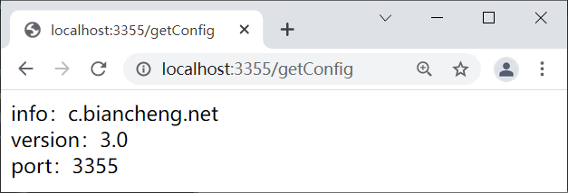
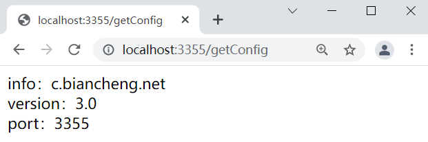
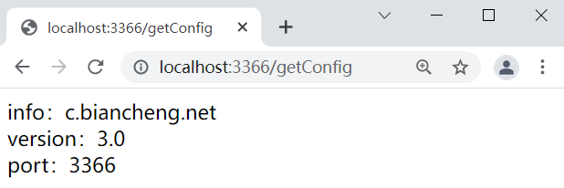

Config：Spring Cloud分布式配置组件（非常详细）
这种将配置文件散落在各个服务中的管理方式，存在以下问题：
- 管理难度大：配置文件散落在各个微服务中，难以管理。
- 安全性低：配置跟随源代码保存在代码库中，容易造成配置泄漏。
- 时效性差：微服务中的配置修改后，必须重启服务，否则无法生效。
- 局限性明显：无法支持动态调整，例如日志开关、功能开关。
Spring Cloud Config
Spring Cloud Config 是由 Spring Cloud 团队开发的项目，它可以为微服务架构中各个微服务提供集中化的外部配置支持。简单点说就是，Spring Cloud Config 可以将各个微服务的配置文件集中存储在一个外部的存储仓库或系统（例如 Git 、SVN 等）中，对配置的统一管理，以支持各个微服务的运行。
- Config Server：也被称为分布式配置中心，它是一个独立运行的微服务应用，用来连接配置仓库并为客户端提供获取配置信息、加密信息和解密信息的访问接口。
- Config Client：指的是微服务架构中的各个微服务，它们通过 Config Server 对配置进行管理，并从 Config Sever 中获取和加载配置信息。
Spring Cloud Config 默认使用 Git 存储配置信息，因此使用 Spirng Cloud Config 构建的配置服务器天然就支持对微服务配置的版本管理。我们可以使用 Git 客户端工具方便地对配置内容进行管理和访问。除了 Git 外，Spring Cloud Config 还提供了对其他存储方式的支持，例如 SVN、本地化文件系统等。
Spring Cloud Config 工作原理
Spring Cloud Config 工作原理如下图。
图1：Spring Cloud Config 工作原理
Spring Cloud Config 工作流程如下：
- 开发或运维人员提交配置文件到远程的 Git 仓库。
- Config 服务端（分布式配置中心）负责连接配置仓库 Git，并对 Config 客户端暴露获取配置的接口。
- Config 客户端通过 Config 服务端暴露出来的接口，拉取配置仓库中的配置。
- Config 客户端获取到配置信息，以支持服务的运行。
Spring Cloud Config 的特点
Spring Cloud Config 具有以下特点：- Spring Cloud Config 由 Spring Cloud 团队开发，可以说是 Spring 的亲儿子，能够与 Spring 的生态体系无缝集成。
- Spring Cloud Config 将所有微服务的配置文件集中存储在一个外部的存储仓库或系统（例如 Git）中，统一管理。
- Spring Cloud Config 配置中心将配置以 REST 接口的形式暴露给各个微服务，以方便各个微服务获取。
- 微服务可以通过 Spring Cloud Config 向配置中心统一拉取属于它们自己的配置信息。
- 当配置发生变化时，微服务不需要重启即可感知到配置的变化，并自动获取和应用最新配置。
- 一个应用可能有多个环境，例如开发（dev）环境、测试（test）环境、生产（prod）环境等等，开发人员可以通过 Spring Cloud Config 对不同环境的各配置进行管理，且能够确保应用在环境迁移后仍然有完整的配置支持其正常运行。
下面我们就通过几个实例来演示 Spring Cloud Config 的使用。
搭建 Config 服务端
1. 在 Github 上创建一个名为 springcloud-config 的仓库（Repository）并获取该仓库的地址。由于 Github 站点对于国内用户来说不够稳定，很可能存在加载缓慢等问题，因此我们可以在码云上执行该操作。2. 在父工程 spring-cloud-demo2 下，创建一个名为 micro-service-cloud-config-center-3344 的 Spring Boot 模块，并在 pom.xml 中添加 Spring Cloud Config 服务端依赖，配置如下。
<?xml version="1.0" encoding="UTF-8"?>
<project xmlns="http://maven.apache.org/POM/4.0.0" xmlns:xsi="http://www.w3.org/2001/XMLSchema-instance"
xsi:schemaLocation="http://maven.apache.org/POM/4.0.0 https://maven.apache.org/xsd/maven-4.0.0.xsd">
<modelVersion>4.0.0</modelVersion>
<parent>
<artifactId>spring-cloud-demo2</artifactId>
<groupId>net.biancheng.c</groupId>
<version>0.0.1-SNAPSHOT</version>
</parent>
<groupId>net.biancheng.c</groupId>
<artifactId>micro-service-cloud-config-center-3344</artifactId>
<version>0.0.1-SNAPSHOT</version>
<name>micro-service-cloud-config-center-3344</name>
<description>Demo project for Spring Boot</description>
<properties>
<java.version>1.8</java.version>
</properties>
<dependencies>
<dependency>
<groupId>org.springframework.boot</groupId>
<artifactId>spring-boot-starter</artifactId>
</dependency>
<dependency>
<groupId>org.springframework.boot</groupId>
<artifactId>spring-boot-starter-test</artifactId>
<scope>test</scope>
</dependency>
<!--配置中心服务器依赖-->
<dependency>
<groupId>org.springframework.cloud</groupId>
<artifactId>spring-cloud-config-server</artifactId>
</dependency>
<dependency>
<groupId>org.springframework.boot</groupId>
<artifactId>spring-boot-starter-web</artifactId>
</dependency>
<dependency>
<groupId>org.springframework.cloud</groupId>
<artifactId>spring-cloud-starter-netflix-eureka-client</artifactId>
</dependency>
</dependencies>
<build>
<plugins>
<plugin>
<groupId>org.springframework.boot</groupId>
<artifactId>spring-boot-maven-plugin</artifactId>
</plugin>
</plugins>
</build>
</project>
3. 在 micro-service-cloud-config-center-3344 类路径（/resources 目录）下，创建一个名为 application.yml 的配置文件，配置如下。
server:
port: 3344 #端口号
spring:
application:
name: spring-cloud-config-center #服务名
cloud:
config:
server:
git:
# Git 地址，https://gitee.com/java-mohan/springcloud-config.git
# 码云（gitee）地址 uri: https://github.com/javmohan/springcloud-config.git (github 站点访问较慢，因此这里我们使用 gitee)
uri: https://gitee.com/java-mohan/springcloud-config.git
#仓库名
search-paths:
- springcloud-config
force-pull: true
# 如果Git仓库为公开仓库，可以不填写用户名和密码，如果是私有仓库需要填写
# username: ********
# password: ********
#分支名
label: master
eureka:
client: #将客户端注册到 eureka 服务列表内
service-url:
defaultZone: http://eureka7001.com:7001/eureka/,http://eureka7002.com:7002/eureka/,http://eureka7003.com:7003/eureka/ #将服务注册到 Eureka 集群
4. 在 micro-service-cloud-config-center-3344 的主启动类上，使用 @EnableConfigServer 注解开启 Spring Cloud Config 配置中心功能，代码如下。
package net.biancheng.c;
import org.springframework.boot.SpringApplication;
import org.springframework.boot.autoconfigure.SpringBootApplication;
import org.springframework.cloud.config.server.EnableConfigServer;
import org.springframework.cloud.netflix.eureka.EnableEurekaClient;
@SpringBootApplication
@EnableEurekaClient
@EnableConfigServer
public class MicroServiceCloudConfigCenter3344Application {
public static void main(String[] args) {
SpringApplication.run(MicroServiceCloudConfigCenter3344Application.class, args);
}
}
5. 新建一个名为 config-dev.yml 的文件，并将其上传到 springcloud-config 仓库 master 分支下，config-dev.yml 的内容如下。
config: info: c.biancheng.net version: 1.0
6. 依次启动服务注册中心（集群）和 micro-service-cloud-config-center-3344，使用浏览器访问“http://localhost:3344/master/config-dev.yml”，结果如下图。
图2：访问配置文件
Spring Cloud Config 规定了一套配置文件访问规则，如下表。
| 访问规则 | 示例 |
|---|---|
| /{application}/{profile}[/{label}] | /config/dev/master |
| /{application}-{profile}.{suffix} | /config-dev.yml |
| /{label}/{application}-{profile}.{suffix} | /master/config-dev.yml |
访问规则内各参数说明如下。
- {application}：应用名称，即配置文件的名称，例如 config-dev。
- {profile}：环境名，一个项目通常都有开发（dev）版本、测试（test）环境版本、生产（prod）环境版本，配置文件则以 application-{profile}.yml 的形式进行区分，例如 application-dev.yml、application-test.yml、application-prod.yml 等。
- {label}：Git 分支名，默认是 master 分支，当访问默认分支下的配置文件时，该参数可以省略，即第二种访问方式。
- {suffix}：配置文件的后缀，例如 config-dev.yml 的后缀为 yml。
通过这套规则，我们在浏览器上就直接对配置文件进行访问。
7. 在浏览器上访问“http://localhost:3344/config-dev.yml”，结果如下图。
图3：Spring Cloud Config 访问配置文件
8. 在浏览器上访问“http://localhost:3344/config/dev/master”，结果如下。
{"name":"config","profiles":["dev"],"label":"master","version":"9caafcc3498e04147463482f8b29e925e8afcc3a","state":null,"propertySources":[{"name":"https://gitee.com/java-mohan/springcloud-config.git/config-dev.yml","source":{"config.info":"c.biancheng.net","config.version":1.0}}]}
自此我们就完成了对 Spring Cloud Config 服务端的搭建和测试。
搭建 Config 客户端
1. 在父工程 spring-cloud-demo2 下，创建一个名为 micro-service-cloud-config-client-3355 的 Spring Boot 模块，并在其 pom.xml 中添加 Spring Cloud Config 客户端的依赖，配置内容如下。
<?xml version="1.0" encoding="UTF-8"?>
<project xmlns="http://maven.apache.org/POM/4.0.0" xmlns:xsi="http://www.w3.org/2001/XMLSchema-instance"
xsi:schemaLocation="http://maven.apache.org/POM/4.0.0 https://maven.apache.org/xsd/maven-4.0.0.xsd">
<modelVersion>4.0.0</modelVersion>
<parent>
<artifactId>spring-cloud-demo2</artifactId>
<groupId>net.biancheng.c</groupId>
<version>0.0.1-SNAPSHOT</version>
</parent>
<groupId>net.biancheng.c</groupId>
<artifactId>micro-service-cloud-config-client-3355</artifactId>
<version>0.0.1-SNAPSHOT</version>
<name>micro-service-cloud-config-client-3355</name>
<description>Demo project for Spring Boot</description>
<properties>
<java.version>1.8</java.version>
</properties>
<dependencies>
<dependency>
<groupId>org.springframework.boot</groupId>
<artifactId>spring-boot-starter-web</artifactId>
</dependency>
<dependency>
<groupId>org.springframework.boot</groupId>
<artifactId>spring-boot-devtools</artifactId>
<scope>runtime</scope>
<optional>true</optional>
</dependency>
<dependency>
<groupId>org.projectlombok</groupId>
<artifactId>lombok</artifactId>
<optional>true</optional>
</dependency>
<dependency>
<groupId>org.springframework.boot</groupId>
<artifactId>spring-boot-starter-test</artifactId>
<scope>test</scope>
</dependency>
<!--Spring Cloud Config 客户端依赖-->
<dependency>
<groupId>org.springframework.cloud</groupId>
<artifactId>spring-cloud-starter-config</artifactId>
</dependency>
<dependency>
<groupId>org.springframework.cloud</groupId>
<artifactId>spring-cloud-starter-netflix-eureka-client</artifactId>
</dependency>
</dependencies>
<build>
<plugins>
<plugin>
<groupId>org.springframework.boot</groupId>
<artifactId>spring-boot-maven-plugin</artifactId>
<configuration>
<excludes>
<exclude>
<groupId>org.projectlombok</groupId>
<artifactId>lombok</artifactId>
</exclude>
</excludes>
</configuration>
</plugin>
</plugins>
</build>
</project>
2. 在 micro-service-cloud-config-client-3355 中类路径（/resources 目录）下，创建一个名为 bootstrap.yml 的配置文件，配置如下。
#bootstrap.yml 是系统级别的，加载优先级高于 application.yml ，负责从外部加载配置并解析
server:
port: 3355 #端口号
spring:
application:
name: spring-cloud-config-client #服务名
cloud:
config:
label: master #分支名称
name: config #配置文件名称，config-dev.yml 中的 config
profile: dev #环境名 config-dev.yml 中的 dev
#这里不要忘记添加 http:// 否则无法读取
uri: http://localhost:3344 #Spring Cloud Config 服务端（配置中心）地址
eureka:
client: #将客户端注册到 eureka 服务列表内
service-url:
defaultZone: http://eureka7001.com:7001/eureka/,http://eureka7002.com:7002/eureka/,http://eureka7003.com:7003/eureka/ #将服务注册到 Eureka 集群
3. 在 net.biancheng.c.controller 包下，创建一个名为 ConfigClientController 的类，通过该类获取配置文件中的配置，代码如下。
package net.biancheng.c.controller;
import org.springframework.beans.factory.annotation.Value;
import org.springframework.web.bind.annotation.GetMapping;
import org.springframework.web.bind.annotation.RestController;
//读取配置中心指定配置文件的内容，并展示到页面
@RestController
public class ConfigClientController {
@Value("${server.port}")
private String serverPort;
@Value("${config.info}")
private String configInfo;
@Value("${config.version}")
private String configVersion;
@GetMapping(value = "/getConfig")
public String getConfig() {
return "info：" + configInfo + "<br/>version：" + configVersion + "<br/>port：" + serverPort;
}
}
4. 在 micro-service-cloud-config-client-3355 的主启动类上，使用 @EnableEurekaClient 注解开启 Eureka 客户端功能，代码如下。
package net.biancheng.c;
import org.springframework.boot.SpringApplication;
import org.springframework.boot.autoconfigure.SpringBootApplication;
import org.springframework.cloud.netflix.eureka.EnableEurekaClient;
@SpringBootApplication
@EnableEurekaClient
public class MicroServiceCloudConfigClient3355Application {
public static void main(String[] args) {
SpringApplication.run(MicroServiceCloudConfigClient3355Application.class, args);
}
}
5. 启动 micro-service-cloud-config-client-3355，使用浏览器访问“http://localhost:3355/getConfig”,结果如下图。
图4：Spring Cloud Config 客户端获取配置信息
6. 将配置文件 config-dev.yml 中 config.version 的值修改为 2.0，配置如下。
config: info: c.biancheng.net version: 2.0
图5：配置中心获取修改后的配置文件
从图 6 可以看出，配置中心已经成功地获取到了修改后的配置。
8. 再次访问“http://localhost:3355/getConfig”，尝试通过 Spring Cloud Config 客户端获取修改后的配置信息，结果如下图。
图6：Spring Cloud Config 客户端获取修改后的配置信息
9. 重启 micro-service-cloud-config-client-3355，再次使用访问“http://localhost:3355/getConfig”，结果如下图。
图7：重启 Spring Cloud Config 客户端获取配置
通过该实例，我们可以得到以下 2 点结论，
- 配置更新后，Spring Cloud Config 服务端（Server）可以直接从 Git 仓库中获取最新的配置。
- 除非重启 Spring Cloud Config 客户端（Client），否则无法通过 Spring Cloud Config 服务端获取最新的配置信息。
手动刷新配置
为了解决不重启 Config 客户端无法获取最新配置的问题，接下来，我们就对 micro-service-cloud-config-client-3355 进行改造，改造步骤如下。1. 在 micro-service-cloud-config-client-3355 的 pom.xml 中添加以下依赖，引入 Spring Boot actuator 监控模块。
<dependency>
<groupId>org.springframework.boot</groupId>
<artifactId>spring-boot-starter-actuator</artifactId>
</dependency>
2. 在配置文件 bootstrap.yml 中添加以下配置，对外暴露 Spring Boot actuator 的监控节点。
# Spring Boot 2.50对 actuator 监控屏蔽了大多数的节点，只暴露了 health 节点，本段配置（*）就是为了开启所有的节点
management:
endpoints:
web:
exposure:
include: "*" # * 在yaml 文件属于关键字，所以需要加引号
3. 在 ConfigClientController 类上使用 @RefreshScope 注解开启配置刷新，代码如下。
package net.biancheng.c.controller;
import org.springframework.beans.factory.annotation.Value;
import org.springframework.cloud.context.config.annotation.RefreshScope;
import org.springframework.web.bind.annotation.GetMapping;
import org.springframework.web.bind.annotation.RestController;
// 读取配置中心指定配置文件的内容，并展示到页面
@RefreshScope //为了让动态（手动）的获取最新的git 配置，在添加 actuator 监控加载 RefreshScope，
@RestController
public class ConfigClientController {
@Value("${server.port}")
private String serverPort;
@Value("${config.info}")
private String configInfo;
@Value("${config.version}")
private String configVersion;
@GetMapping(value = "/getConfig")
public String getConfig() {
return "info：" + configInfo + "<br/> version：" + configVersion + "<br/>port：" + serverPort;
}
}
4. 重启 micro-service-cloud-config-client-3355，然后将配置文件 config-dev.yml 中的 config.version 修改为 3.0，配置如下。
config: info: c.biancheng.net version: 3.0
5. 使用浏览器再次访问“http://localhost:3355/getConfig”，结果如下图。
图8：重启 Spring Cloud Config 客户端后获取配置
从图 9 可以看出，即使我们对 Spring Cloud Config 客户端进行了改造，也依然无法直接获取到最新配置。
6. 打开命令行窗口，使用以下命令发送一个 POST 请求刷新 Spring Cloud Config 3355 客户端，通知客户端配置文件已经修改，需要重新拉去配置。
curl -X POST "http://localhost:3355/actuator/refresh"
7. 使用浏览器再次访问“http://localhost:3355/getConfig”，结果如下图。

图9：手动刷新客户端
手动刷新配置的问题
在上面的实例中，我们通过在 Config 客户端（端口号：3355）中引入 Spring Boot actuator 监控组件来监控配置的变化，使我们可以在不重启 Config 客户端的情况下获取到了最新配置，原理如下图。
图10：Spring Cloud Congfig 手动刷新
这种方式虽然解决了重启 Config 客户端才能获取最新配置的问题，但另一个问题却也接踵而至，那就是只要配置仓库中的配置发生改变，就需要我们挨个向 Config 客户端手动发送 POST 请求，通知它们重新拉取配置。
我们知道，所谓的 Config 客户端其实就是一个一个的服务。在微服务架构中，一个系统往往包含十几甚至几十个服务，如果因为某一个配置文件的修改而向几十个微服务发送 POST 请求，这显然是不合理的。
那么有没有“一次通知，处处生效”的方式呢？答案是肯定的。Spring Cloud Config 配合 Bus 就可以实现配置的动态刷新。
Config+Bus 实现配置的动态刷新
Spring Cloud Bus 又被称为消息总线，它能够通过轻量级的消息代理（例如 RabbitMQ、Kafka 等）将微服务架构中的各个服务连接起来，实现广播状态更改、事件推送等功能，还可以实现微服务之间的通信功能。目前 Spring Cloud Bus 支持两种消息代理：RabbitMQ 和 Kafka。
Spring Cloud Bus 的基本原理
Spring Cloud Bus 会使用一个轻量级的消息代理来构建一个公共的消息主题 Topic（默认为“springCloudBus”），这个 Topic 中的消息会被所有服务实例监听和消费。当其中的一个服务刷新数据时，Spring Cloud Bus 会把信息保存到 Topic 中，这样监听这个 Topic 的服务就收到消息并自动消费。Spring Cloud Bus 动态刷新配置的原理
利用 Spring Cloud Bus 的特殊机制可以实现很多功能，其中配合 Spring Cloud Config 实现配置的动态刷新就是最典型的应用场景之一。当 Git 仓库中的配置发生了改变，我们只需要向某一个服务（既可以是 Config 服务端，也可以是 Config 客户端）发送一个 POST 请求，Spring Cloud Bus 就可以通过消息代理通知其他服务重新拉取最新配置，以实现配置的动态刷新。
Spring Cloud Bus 动态刷新配置的工作原理，如下图所示。

图11：Bus+Config 实现配置的动态刷新
根据图 12，利用 Spring Cloud Bus 实现配置的动态刷新需要以下步骤:
- 当 Git 仓库中的配置发生改变后，运维人员向 Config 服务端发送一个 POST 请求，请求路径为“/actuator/refresh”。
- Config 服务端接收到请求后，会将该请求转发给服务总线 Spring Cloud Bus。
- Spring Cloud Bus 接到消息后，会通知给所有 Config 客户端。
- Config 客户端接收到通知，请求 Config 服务端拉取最新配置。
- 所有 Config 客户端都获取到最新的配置。
Spring Cloud Bus 动态刷新配置（全局广播）
下面我们以 RabbitMQ 为例，来演示如何使用 Config+Bus 实现配置的动态刷新。1. 在 micro-service-cloud-config-center-3344 的 pom.xml 中，添加 Spring Boot actuator 监控模块和 Spring Cloud Bus 的依赖，代码如下。
<!--添加消息总线（Bus）对 RabbitMQ 的支持-->
<dependency>
<groupId>org.springframework.cloud</groupId>
<artifactId>spring-cloud-starter-bus-amqp</artifactId>
</dependency>
<!--添加Spring Boot actuator 监控模块的依赖-->
<dependency>
<groupId>org.springframework.boot</groupId>
<artifactId>spring-boot-starter-actuator</artifactId>
</dependency>
2. 在 micro-service-cloud-config-center-3344 的配置文件 application.yml 中，添加 RabbitMQ 和 Spring Boot actuator 的相关配置，配置内容如下。
##### RabbitMQ 相关配置，15672 是web 管理界面的端口，5672 是 MQ 的访问端口###########
spring:
rabbitmq:
host: 127.0.0.1
port: 5672
username: guest
password: guest
# Spring Boot 2.50对 actuator 监控屏蔽了大多数的节点，只暴露了 heath 节点，本段配置（*）就是为了开启所有的节点
management:
endpoints:
web:
exposure:
include: 'bus-refresh'
3. 在 micro-service-cloud-config-client-3355 的 pom.xml 中，添加 Spring Cloud Bus 的相关依赖，代码如下。
<!--添加消息总线（Bus）对 RabbitMQ 的支持-->
<dependency>
<groupId>org.springframework.cloud</groupId>
<artifactId>spring-cloud-starter-bus-amqp</artifactId>
</dependency>
4. 在 micro-service-cloud-config-client-3355 的配置文件 bootstrap.yml 中添加以下配置。
##### RabbitMQ 相关配置，15672 是web 管理界面的端口，5672 是 MQ 的访问端口###########
spring:
rabbitmq:
host: 127.0.0.1
port: 5672
username: guest
password: guest
5. 参照 micro-service-cloud-config-client-3355，新建一个名为 micro-service-cloud-config-client-bus-3366 的 Spring Boot 模块（端口号为 3366），并在其配置文件 bootstrap.yml 中添加以下配置。
#bootstrap.yml 是系统级别的，加载优先级高于 application.yml ，负责从外部加载配置并解析
server:
port: 3366 #端口号为 3366
spring:
application:
name: spring-cloud-config-client-bus
cloud:
config:
label: master #分支名称
name: config #配置文件名称，config-dev.yml 中的 config
profile: dev #配置文件的后缀名 config-dev.yml 中的 dev
#这里不要忘记添加 http:// 否则无法读取
uri: http://localhost:3344 #spring cloud 配置中心地址
##### RabbitMQ 相关配置，15672 是web 管理界面的端口，5672 是 MQ 的访问端口###########
rabbitmq:
host: 127.0.0.1
port: 5672
username: guest
password: guest
###################### eureka 配置 ####################
eureka:
client: #将客户端注册到 eureka 服务列表内
service-url:
defaultZone: http://eureka7001.com:7001/eureka/,http://eureka7002.com:7002/eureka/,http://eureka7003.com:7003/eureka/ #将服务注册到 Eureka 集群
# Spring Boot 2.50对 actuator 监控屏蔽了大多数的节点，只暴露了 heath 节点，本段配置（*）就是为了开启所有的节点
management:
endpoints:
web:
exposure:
include: "*" # * 在yaml 文件属于关键字，所以需要加引号
6. 依次重启 micro-service-cloud-config-center-3344、micro-service-cloud-config-client-3355，使用浏览器访问“http://localhost:3355/getConfig”，结果如下图。

图12：Spring Cloud Bus 动态刷新配置
7. 启动 micro-service-cloud-config-client-bus-3366，使用浏览器访问“http://localhost:3366/getConfig”，结果如下图。

图13：Spring Cloud Bus 动态刷新配置
8. 将配置文件 config-dev.yml 中的 config.version 修改为 4.0，配置如下。
config: info: c.biancheng.net version: 4.0
9. 打开命令行窗口，使用以下命令向 micro-service-cloud-config-center-3344（Config Server）发送一个 POST 请求，刷新配置。
curl -X POST "http://localhost:3344/actuator/bus-refresh"
10. 使用浏览器再次访问“http://localhost:3355/getConfig”，结果如下图。
图14：Spring Cloud Bus 动态刷新
11. 使用浏览器再次访问“http://localhost:3366/getConfig”，结果如下图。
图15：Spring Cloud Bus 动态刷新
注意：在使用 Spring Cloud Bus 时，必须保证 Bus 所连接的消息代理软件（例如 RabbitMQ）已经正确安装且运行正常。
Spring Cloud Bus 动态刷新配置（定点通知）
所谓定点通知，就是不再通知所有的 Config 客户端，而是根据需求只通知其中某一个 Config 客户端。使用 Spring Cloud Bus 实现定点通知的方法十分简单，只要我们在发送 POST 请求时使用以下格式即可。
http://{hostname}:{port}/actuator/bus-refresh/{destination}
参数说明如下：
- {hostname}： 表示 Config 服务端的主机地址，既可以是域名，也可以是 IP 地址。
- {port}：表示 Config 服务端的端口号.
- {destination}：表示需要定点通知的 Config 客户端（微服务），由 Config 客户端的服务名（spring.application.name）+端口号（server.port）组成，例如只通知 micro-service-cloud-config-client-3355 刷新配置，则取值为 spring-cloud-config-client:3355。
下面我们就通过一个简单的实例，来演示下 Spring Cloud Bus 动态刷新的定点通知。
1. 将配置文件 config-dev.yml 中的 config.version 修改为 5.0，配置如下。
config: info: c.biancheng.net version: 5.0
2. 打开命令行窗口，使用以下命令向 micro-service-cloud-config-center-3344 发送一个 POST 请求。
curl -X POST "http://localhost:3344/actuator/bus-refresh/spring-cloud-config-client:3355"
3. 使用浏览器访问“http://localhost:3355/getConfig”，结果如下图。
图16：Spring Cloud Bus 定点通知
4. 使用浏览器再次访问“http://localhost:3366/getConfig”，结果如下图。
图17：Spring Cloud Bus 定点通知
关注公众号「站长严长生」，在手机上阅读所有教程，随时随地都能学习。内含一款搜索神器，免费下载全网书籍和视频。

微信扫码关注公众号